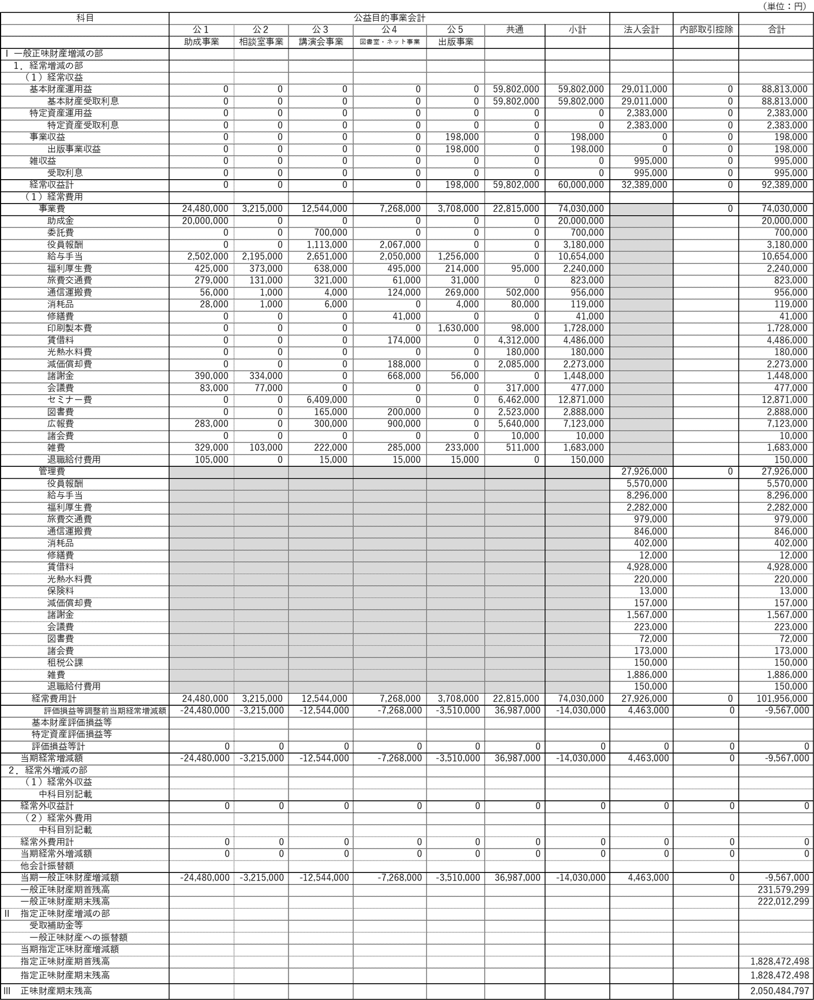

令和7年度の事業計画
(令和7年4月1日〜令和8年3月31日)
1.公益目的事業
| 番号 | 事業名 | 実施・開催 | 予算 (千円) |
事業内容 |
|---|---|---|---|---|
| 公1(1) | 研究・活動助成 | 7月 — |
24,480 | ・精神療法の研究や啓発活動に関する助成 ・委託研究「外来森田療法の治療効果研究」（8年目） |
| 公2(1) | 心の健康相談 | 毎日 月2回 |
2,722 | ・財団職員・委嘱相談員による電話・面接・メール相談 ・東京・大阪にて毎月各1回（45分間×4枠）の臨床心理士によるカウンセリングの実施 |
| 公2(2) | 心の体験フォーラム会員交流会 | 年2回 | 493 | ・交流サイト・心の体験フォーラム会員の交流会（1回当たり10名以内） |
| 公3(1) | 財団セミナー | — | 279 | ・誰でも参加できる無料のオンライン＆ライブのメンタルヘルスセミナー（関西圏で実施） |
| 公3(2) | 委託セミナー | 年4回 | 1,780 | ・各地の機関や個人に委託して行う無料のオンライン又はハイブリッド型メンタルヘルスセミナー（関西圏以外で実施） |
| 公3(3) | その他のセミナー | 年24回 年1回 年1回 |
10,485 | ・心の健康ビデオセミナーの配信(YouTube) ・委託教育向けセミナー(オンライン) ・働く人のためのメンタルヘルスセミナー(YouTube) |
| 公4(1) | 精神療法関係図書室 | — | 2,149 | ・専門図書室の運営並びに財団ホームページへの情報掲載 |
| 公4(2) | 心の体験フォーラムの運営 | — | 5,119 | ・不安症など心の健康に課題を持つ人を対象にした会員交流サイトの管理運営 |
| 公5(1) | 研究助成報告集 | 年1回 | 1,760 | ・研究助成の成果報告集の発刊 |
| 公5(2) | 機関紙 | 年1回 | 1,315 | ・森田療法や財団活動に関する刊行物 |
| 公5(3) | 精神療法関係資料の販売 | — | 633 | ・森田療法DVDや関連書籍の販売 |
| 共通費 | 共通 | — | 5,972 | ・家賃、リース料、光熱水料費、福利厚生費、通信費等 |
| コンテンツ開発 | — | 16,843 | ・システム開発､動画コンテンツ制作､NET広告･メディア戦略 | |
| 合 計 | 74,030 | 令和6年度：72,374千円 | ||
※共通費：各事業に区分出来ない経費
※各事業予算には役員・職員の人件費も含まれており、業務分担に応じて按分
2.管理業務一覧
公益事業を推進するために必要な間接業務は次のとおりです。
| 番号 | 業務名 | 実施・開催 | 予算 (千円) |
事業内容 |
|---|---|---|---|---|
| 1 | 理事会 | 3回 | 2,622 | オンライン通常理事会2回、書面決議臨時理事会1回 |
| 2 | 評議員会 | 1回 | 1,365 | オンライン定時評議員会1回 |
| 3 | 資産管理・運用委員会 | 7回 | 2,152 | 債券買替5回、運用報告等2回 |
| 4 | 公益認定等委員会 | — | 689 | 定期提出2回、変更届1回 |
| 5 | 企画委員会 | 6回 | 1,444 | 企画会議6回、学会・研究会等情報収集活動 |
| 6 | その他管理業務 | — | 19,654 | 人件費、家賃、リース料、光熱費、福利厚生費等 |
| 合 計 | 27,926 | 令和6年度：34,591千円 | ||
※1～5番の各業務には、役員・職員の人件費も含まれており、業務分担に応じて按分
※6番には、公益目的事業と管理業務の両方にかかる経費を一定の比率で配賦したものも含む
令和7年度予算
(令和7年4月1日～令和8年3月31日)
1.令和7年度収支予算書(正味財産増減計算書)
| 科目 | 当年度 | 前年度 | 増減 | 前年度に対する主な増減内容 |
|---|---|---|---|---|
| Ⅰ 一般正味財産 増減の部 |
||||
| 1.経常増減の部 | ||||
| （1）経常収益 | ||||
| ①基本財産運用益 | ||||
| 基本財産受取利息 | 88,813,000 | 887,780,00 | 35,000 | |
| ②特定資産受取利息 | ||||
| 特定資産受取利息 | 2,383,000 | 1,554,000 | 829,000 | |
| ③事業収益 | ||||
| 出版事業収益 | 198,000 | 242,000 | -44,000 | |
| ④雑収益 | ||||
| 受取利息 | 995,000 | 2,695,000 | -1,700,000 | |
| 雑収益 | 0 | 0 | 0 | |
| 経常収益計 | 92,389,000 | 93,269,000 | -880,000 | |
| （2）経常費用 | ||||
| ①事業費 | 74,030,000 | 72,374,000 | 1,656,000 | |
| 助成金 | 20,000,000 | 20,000,000 | 0 | |
| 委託費 | 700,000 | 1,500,000 | -800,000 | 公3-2.委託セミナー費 -800,000円 |
| 役員報酬 | 3,180,000 | 3,180,000 | 0 | |
| 給与手当 | 10,654,000 | 15,798,000 | -5,144,000 | R6年度1名退職 |
| 福利厚生費 | 2,240,000 | 3,110,000 | -870,000 | R6年度1名退職 |
| 旅費交通費 | 823,000 | 1,026,000 | -203,000 | R6年度1名退職 |
| 通信運搬費 | 956,000 | 469,000 | 487,000 | 公4-1.AIイラスト自動生成 +24,000円 公5-1.助成報告集送料 +80,000円 公-共通.ChatGPT +360,000円 |
| 消耗品費 | 119,000 | 115,000 | 4,000 | |
| 消耗什器費 | 0 | 0 | 0 | |
| 修繕費 | 41,000 | 40,000 | 1,000 | |
| 印刷製本費 | 1,728,000 | 1,295,000 | 433,000 | 公5-1.助成報告集 +135,000円 公5-2.メンタルニュース№43 +200,000円 公-共通.財団リーフレット +98,000円 |
| 賃借料 | 4,486,000 | 4,399,000 | 87,000 | |
| 光熱水料費 | 180,000 | 180,000 | 0 | |
| 減価償却費 | 2,273,000 | 1,969,000 | 304,000 | 公4-1.ソフトウェア分 +188,000円 公-共通.パソコン･液晶モニター分 +116,000円 |
| 諸謝金 | 1,448,000 | 1,336,000 | 112,000 | |
| 会議費 | 477,000 | 477,000 | 0 | |
| セミナー費 | 12,871,000 | 7,456,000 | 5,415,000 | 公3-1.財団セミナー費 -140,000円 公3-2.委託セミナー費 +1,266,000円 公3-3.ﾋﾞﾃﾞｵｾﾐﾅｰ費･ﾗｲﾌﾞｾﾐﾅｰ費 +883,000円 公-共通.再現風動画･YouTube英語版制作費 +3,406,000円 |
| 図書費 | 2,888,000 | 3,199,000 | -311,000 | 公3-3.ﾋﾞﾃﾞｵｾﾐﾅｰ･ﾗｲﾌﾞｾﾐﾅｰDVD費 +53,000円 公4-1.助成申請システム修正費 +150,000円 公-共通.英語版動画サイト構築費 -550,000円 |
| 広報費 | 7,123,000 | 4,842,000 | 2,281,000 | 公1-1.助成広告費 +199,000円 公3-1･公3-3.セミナー広告費 -398,000円 公4-1.NET広告費 -460,000円 公-共通.検索連動型･SNS･YouTube広告費 +2,940,000円 |
| 諸会費 | 10,000 | 10,000 | 0 | |
| 雑費 | 1,683,000 | 1,772,000 | -89,000 | |
| 退職給付費用 | 150,000 | 201,000 | -51,000 | |
| 寄附金 | 0 | 0 | 0 | |
| ②管理費 | 27,926,000 | 34,591,000 | -6,665,000 | |
| 役員報酬 | 5,570,000 | 5,650,000 | -80,000 | |
| 給与手当 | 8,296,000 | 7,644,000 | 652,000 | アルバイト勤務日数増加 |
| 福利厚生費 | 2,282,000 | 2,169,000 | 113,000 | アルバイト勤務日数増加 |
| 旅費交通費 | 979,000 | 891,000 | 88,000 | アルバイト勤務日数増加 |
| 通信運搬費 | 846,000 | 776,000 | 70,000 | |
| 消耗品 | 402,000 | 351,000 | 51,000 | |
| 消耗什器費 | 0 | 0 | 0 | |
| 修繕費 | 12,000 | 12.000 | 0 | |
| 賃借料 | 4,928,000 | 4,928,000 | 0 | |
| 光熱水料費 | 220,000 | 220,000 | 0 | |
| 保険料 | 13,000 | 13,000 | 0 | |
| 減価償却費 | 157,000 | 119,000 | 38,000 | |
| 諸謝金 | 1,567,000 | 1,345,000 | 222,000 | |
| 会議費 | 223,000 | 211,000 | 12,000 | |
| 図書費 | 72,000 | 72,000 | 0 | |
| 諸会費 | 173,000 | 161,000 | 12,000 | |
| 租税公課 | 150,000 | 150,000 | 0 | |
| 雑費 | 1,886,000 | 1,651,000 | 235,000 | |
| 退職給付費用 | 150,000 | 8,228,000 | -8,078,000 | R6年度に発生した職員退職金分が減少 |
| 経常費用計 | 101,956,000 | 106,965,000 | -5,009,000 | |
| 当期経常増減額 | -9,567,000 | -13,696,000 | 4,129,000 | |
| 2.経常外増減の部 | ||||
| （1）経常外収益 | ||||
| 経常外収益計 | 0 | 0 | 0 | |
| （2）経常外費用 | ||||
| 経常外費用計 | 0 | 0 | 0 | |
| 当期経常外増減額 | 0 | 0 | 0 | |
| 当期一般正味財産 増減額 |
-9,567,000 | -13,696,000 | 4,129,000 | |
| 一般正味財産 期首残高 |
231,579,299 | 205,085,182 | 26,494,117 | |
| 一般正味財産 期末残高 |
222,012,299 | 191,389,182 | 30,623,117 | |
| Ⅱ 指定正味財産 増減の部 |
||||
| 当期指定正味財産 増減額 |
0 | 0 | 0 | |
| 指定正味財産 期首残高 |
1,828,472,498 | 1,694,460,853 | 134,011,645 | |
| 指定正味財産 期末残高 |
1,828,472,498 | 1,694,460,853 | 134,011,645 | |
| Ⅲ 正味財産期末残高 | 2,050,484,797 | 1,885,850,035 | 164,634,762 |
2.令和7年度収支予算書内訳表（正味財産増減計算書）
令和7年4月1日〜令和8年3月31日まで
{kind=link}

（注）貸借対照表内訳表の作成義務がないため、一般正味財産期首残高、一般正味財産期末残高、指定正味財産期首残高、指定正味財産期末残高及び正味財産期末残高は合計欄のみを記載している。